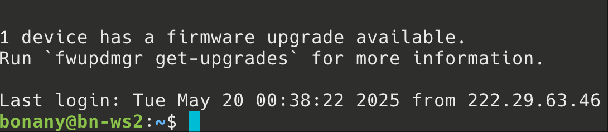
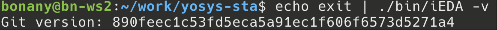
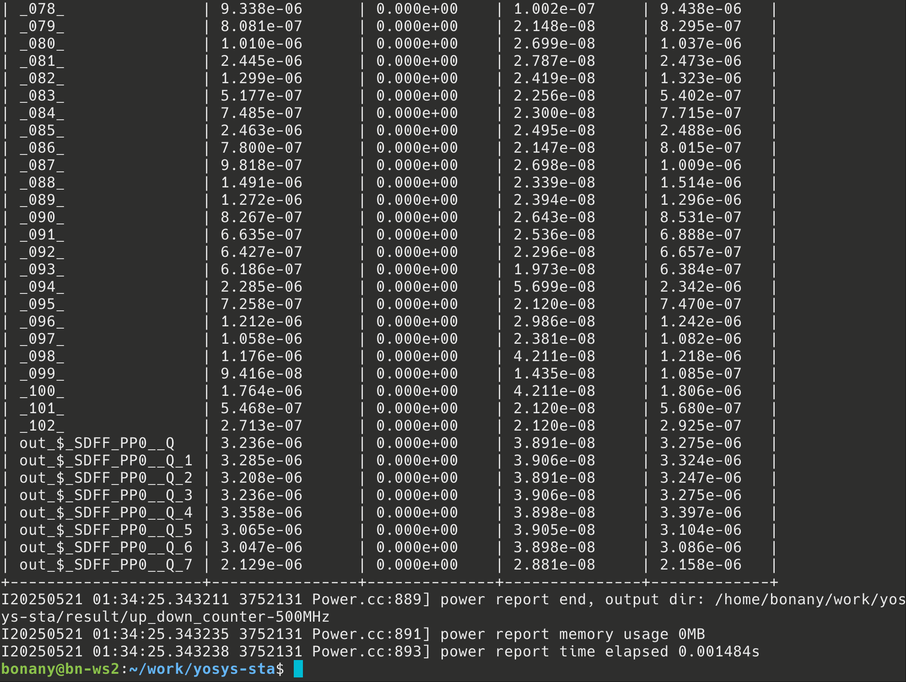
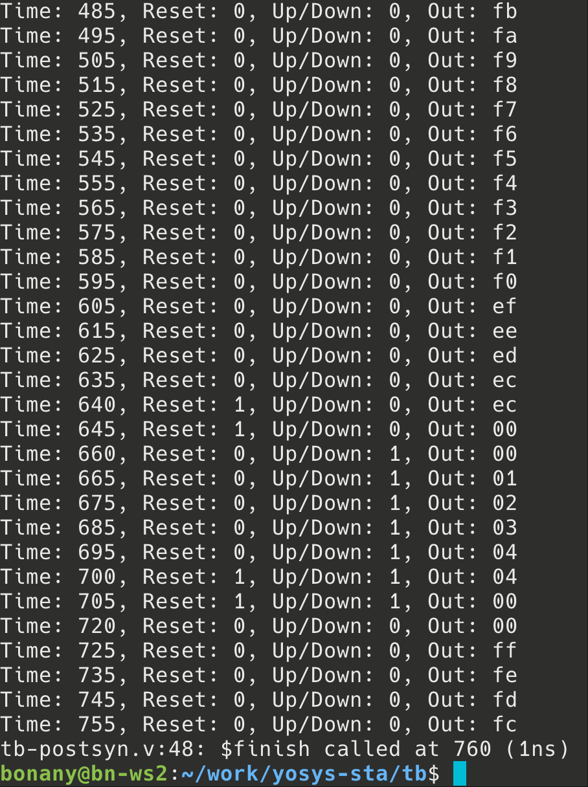

实验7、初识逻辑综合
教程
逻辑综合（logical synthesis）主要将Register-Transfer-Level (RTL)级的硬件描述语言代码转换为结构化表示。如下面的可综合的Verilog HDL写的可配置记数器在逻辑综合前（RTL）与逻辑综合后（gate-level netlist）的形式分别为【先看一眼logical syn大概是在干啥，后面我们一步一步跟着做一下】：
Note
可配置记数器（programable counter）指的是记数器除了正常向上记数功能外，还可以进入一个额外的“设置”模式，直接把内部DFF的Q端设置成为某数值。

上图中Pre-syn RTL code【program_counter.v】
上图中Post-syn gate-level netlist（由Cadence Genus工具进行逻辑综合的）【ProgramCounter.vg】
下面我们分三步完成上述逻辑综合工作：
第一步：远程连接我们的服务器
方法1：
前提：连接校园网（因为我们的服务器在校园内局域网，如果你在校外需要开北大VPN） 打开powershell或者terminal,直接输入
ssh [你的用户名]@162.105.19.94
然后输入你的密码即可，注意linux命令行中输入密码过程为了保密不显示出来，输完密码按回车就行。
方法2：
如果用windows的话也可以用putty或者Xshell(对学生免费)设置ssh连接，简明教程可以百度到：
说明：
无论用powershell、terminal、Xshell还是putty，你的远程服务器上的账户为：
username: s你的学号，如：s2300012345
password: class2025
不管用哪种方法，成功完成远程连接后应该显示类似下图的界面，前面是你自己的账户名，后面“bn-ws2”是我们的工作站的主机名：

如果成功了，现在你就可以在我们的服务器上通过网络ssh协议登录并且可以“为所欲为”了首次进去之后如果怕别人进你的账户，可以自行改密码（方法请自己百度/问LLM去）；操作系统为Ubuntu。
我们远程用服务器没有图形界面的，只用命令行。
如果想用服务器上需要GUI的工具，比如gvim、gtkwave等，需要在ssh的时候加上-X或者-Y选项，并在自己的本地电脑上安装X11 Server(如VcXsrv)，具体说明可见这里：
ssh [你的账户名]@162.105.19.94 -Y
第二步：把本地的RTL design file上传到服务器自己的账户里面去
方法1：
打开powershell或者terminal,直接输入
cd [你的RTL .v file所在的文件夹]
scp [你的design file.v] [你的账户名]@162.105.19.94:~/
然后输个远程账户的密码就传过去了。
说明：
scp这句的意思就是把你的design file.v上传到IP地址是162.105.19.94的～（用户根目录）里去。
方法2：
第三步：在服务器上进行逻辑综合（我们用开源的Yosis）
准备了示例文件夹：/home/share/，先把它copy到自己的根目录：
mkdir ~/work
cd ~/work
cp /data/share/yosys-sta.tar.gz .
tar xvzf yosys-sta.tar.gz
cd yosys-sta
#配置一下yosis环境变量,只需要配置一次
echo "export PATH=$PATH:/data/share/oss-cad-suite/bin" >> ~/.bashrc
bash
make init #起始配置iEDA eda工具
echo exit | ./bin/iEDA -v # 若运行成功, 终端将输出iEDA的版本号，如下图

复制过来之后可以先用ls看一下目录：
yosys-sta
├── bin
│ └── iEDA
├── example
│ └── cnt.v
├── iEDA
├── Makefile
├── pdk
│ └── nangate45
├── README.md
└── scripts
├── common.tcl
├── default.sdc
├── fix-fanout.json
├── fix-fanout.tcl
├── pdk
├── sta.tcl
├── yosys-area.tcl
└── yosys.tcl
然后开始进行综合：
# make clean # if cleanup is needed
make sta
稍等几分钟，因为这个例子代表已经验证过没有问题，所以应该可以跑出来：

现在的results/up_down_counter-500MHz包含以下内容:
result/up_down_counter-500MHz
├── fix-fanout.log
├── sta.log
├── synth_check_fixed.txt
├── synth_check.txt
├── synth_stat_fixed.txt
├── synth_stat.txt
├── up_down_counter.cap
├── up_down_counter.fanout
├── up_down_counter_hold.skew
├── up_down_counter_instance.csv
├── up_down_counter_instance.pwr
├── up_down_counter.netlist.fixed.v
├── up_down_counter.netlist.syn.v
├── up_down_counter.pwr
├── up_down_counter.rpt
├── up_down_counter_setup.skew
├── up_down_counter.trans
├── up_down_counter.v
├── yosys-fixed.log
└── yosys.log
这些是逻辑综合出来的结果，包括上述提到的：
运行后, 可在result/gcd-500MHz/目录下查看评估结果. 部分文件说明如下:
up_down_counter.netlist.syn.v- Yosys综合的网表文件synth_stat.txt- Yosys综合的面积报告synth_check.txt- Yosys综合的检查报告, 用户需仔细阅读并决定是否需要排除相应警告yosys.log- Yosys综合的完整日志up_down_counter.netlist.fixed.v- iNO优化扇出后的网表文件fix-fanout.log- iNO优化扇出的日志synth_stat_fixed.txt- 优化扇出后Yosys综合的面积报告synth_check_fixed.txt- 优化扇出后Yosys综合的检查报告yosys-fixed.log- 优化扇出后Yosys综合的完整日志up_down_counter.rpt- iSTA的时序分析报告, 包含WNS, TNS和时序路径up_down_counter.cap- iSTA的电容违例报告up_down_counter.fanout- iSTA的扇出违例报告up_down_counter.trans- iSTA的转换时间违例报告up_down_counter_hold.skew- iSTA的hold模式下时钟偏斜报告up_down_counter_setup.skew- iSTA的setup模式下时钟偏斜报告up_down_counter.pwr- iSTA的总体功耗报告up_down_counter_instance.pwr- iSTA的标准单元级别功耗报告up_down_counter_instance.csv- iSTA的标准单元级别功耗报告, CSV格式sta.log- iSTA的日志
评估其他设计
有两种操作方式：
命令行传参方式, 在命令行中指定其他设计的信息
make -C /path/to/this_repo sta \ DESIGN=mydesign SDC_FILE=/path/to/my.sdc \ CLK_FREQ_MHZ=100 CLK_PORT_NAME=clk O=/path/to/pwd \ RTL_FILES="/path/to/mydesign.v /path/to/xxx.v ..."
修改变量方式, 在
Makefile中修改上述变量(DESIGNCLK_FREQ_MHZCLK_PORT_NAME), 然后运行make sta
注意:
在
RTL_FILES的文件中必须包含一个名为DESIGN值的modulesdc文件中的时钟端口名称需要与设计文件保持一致, 具体内容可参考样例设计GCD中的相应文件
Pre-和Post-Syn仿真
Pre-Syn仿真就是用testbench.v去include RTL design file（如本例中为program_counter.v）即可。
而Post-Syn仿真也很简单，与pre-syn simulation唯“三”不同的地方就是：
`include "up_down_counter.netlist.syn.v"替代`include cnt.vup_down_counter.netlist.syn.v里引用了PDK的标准库的基础门电路单元，比如aoi (aoi是and-or-inverter的简称，表达式为c=~(a & b | c))、and2等等，因此必须再include上pdk标准单元库的门电路行为模型，我们本次用的Verilog模型在
/data/share/nangate45/sim/cells.v，所以要在module外面加上：`include "/data/share/nangate45/sim/cells.v"
在testbench.v里testbench module内部增加一块代码：
initial $sdf_annotate("path-to-sdf-file/design.sdf");
不过本实验的开源工具没有生成相应的sdf时序文件，因此我们先忽略这一点。
现在跑一下pre-syn仿真和post-syn仿真：
在yosys-sta下面建一个新的tb文件夹：
mkdir [path to "yosys-sta"]/tb
写两个新的tb.v与tb-postsyn.v
分别运行：
#pre-syn tb
iverilog tb.v -o presyn.out
vvp presyn.out
#post-syn tb
iverilog tb-postsyn.v -o postsyn.out
vvp postsyn.out
正常跑完应该长这样：

```{warning}
在跑上面的程序时，一定要注意*路径*，问一下include的东西simulator是否能找到。
Warning
因为我们用的是一个开源标准库，所以功能并不完善，$sdf_annotate的东西被忽略，因此本实验仅作验证流程演示，post-syn仿真时可能延迟在波形中无法显示。
post-syn仿真验证功能通过:D
练习
Note
[问题1] 请对于实验四中自己设计的交通灯控制器进行逻辑综合，并进行综合后仿真验证（post-synthesis simulation，或者称为post-syn simulation）。请在报告中提交：（1）带标记的波形图（pre-与post-syn仿真的）功能验证（2）通过查看综合报告（synthesis report）参数填写附表1（见下方）。
附表1：
Specs |
Unit |
Value |
|---|---|---|
Fastest Working Frequency |
Hz |
|
Power |
W |
|
Cell Number |
1 |
|
Area |
um^2 |
注：Fastest Working Frequency = 1 / (设置的working period - slack)